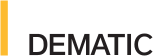
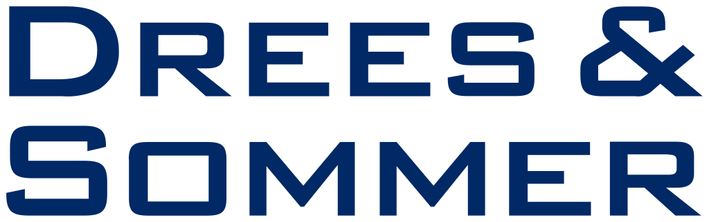
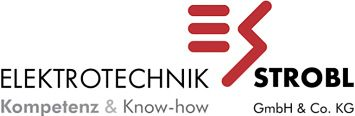
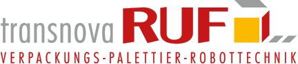

Wir bringen Fachkraft
zum Projekt.
STROMIND verbindet erfahrene Elektrofachkräfte mit anspruchsvollen Industrieprojekten in Deutschland und Europa.
Ich suche Fachkräfte
Senden Sie Ihre Projektanfrage. Wir prüfen den Bedarf und melden verfügbare Kapazitäten zurück.
ANFRAGE SENDEN →Ich suche Arbeit
Bewirb dich bei STROMIND und zeig uns kurz, was du in der Industrie kannst.
JETZT BEWERBEN →Was unsere Fachkräfte können.
Erfahrung aus realen Industrieprojekten.
Die Erfahrung von STROMIND basiert auf realen Industrieprojekten. Der Gründer war im Rahmen von Nachunternehmer- und Montageeinsätzen an Projekten für namhafte Unternehmen tätig.




Die dargestellten Unternehmen sind Referenzen aus der persönlichen Projekterfahrung des Gründers von STROMIND im Rahmen von Nachunternehmer- und Montageeinsätzen. Die Darstellung stellt keine Aussage über eine direkte Geschäftsbeziehung zwischen diesen Unternehmen und STROMIND dar.
Arbeit, die man sehen kann.
Bereit für Ihr nächstes Projekt?
Senden Sie uns Ihren Bedarf. Wir melden uns schnellstmöglich mit einer realistischen Einschätzung unserer Kapazitäten.